Panduan untuk tim · tidak perlu latar belakang IT
MentariSmartParent
apa ini, isinya apa,
dan bagaimana alurnya
Sebuah situs web untuk orang tua berisi artikel, video, dan tips pengasuhan yang ditinjau psikolog & dokter anak — gratis. Setiap topik yang dibaca tersambung ke produk Mentari yang relevan, dan sambungannya selalu diberi label.
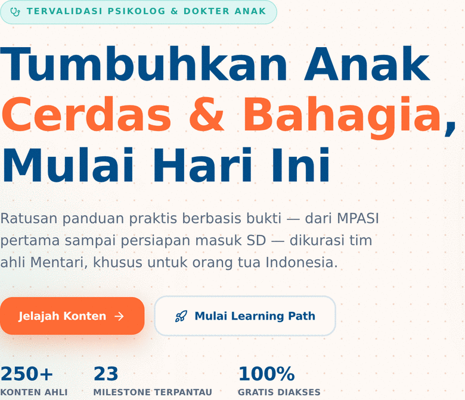
Baca ini dulu · 60 detik
Kalau cuma ingat satu halaman,
ingat yang ini
1 · Ini untuk orang tua
Bukan untuk guru, bukan untuk sekolah. Penggunanya ibu dan ayah yang sedang mencari jawaban soal anaknya.
2 · Isinya ilmu, gratis
Artikel, video, tips, dan checklist tumbuh kembang. Semua konten gratis — tidak ada paywall.
3 · Produk muncul di akhir
Setelah orang tua membaca, barulah muncul rekomendasi produk Mentari — berlabel jelas, bukan iklan terselubung.
Kalimat satu baris untuk menjelaskan ke siapa pun
“Situs parenting berisi konten tervalidasi ahli, yang menghubungkan topik bacaan dengan produk Mentari yang relevan.”
BUKAN INI
Bukan toko online. Bukan aplikasi yang harus diunduh. Bukan pengganti dokter.
Alur pemakaian · gambaran besar
Perjalanan satu orang tua, lima langkah
Ini yang terjadi dari pertama kali ketemu sampai akhirnya membeli. Tidak ada langkah yang boleh terlewat.
Ketemu
Cari di Google atau dapat link WhatsApp
Baca
Buka artikel, lihat nama ahlinya
Daftar
Nama + email saja, gratis
Pakai rutin
Checklist anak, simpan bacaan, diskusi
Beli / ikut
Klik rekomendasi produk Mentari
Banyak yang berhenti di sini. Karena semua artikel bisa dibaca tanpa daftar, sebagian orang tua tidak melihat alasan untuk membuat akun. Ini tantangan yang masih dikerjakan — bukan sesuatu yang sudah beres.
Yang didapat Mentari di tiap langkah
1 kali baca
1 akun baru Data minat
(topik apa yang dibaca)
Profil anak 1 klik produk
= calon pembeli
Tur layar · 1 dari 8
Beranda — kesan pertama
Tampilan asli — bagian judul beranda
1 Janji utamanya
Pita “Tervalidasi psikolog & dokter anak” langsung terlihat sebelum orang membaca apa pun.
2 Dua tombol, dua niat
Jelajah Konten untuk yang ingin membaca bebas. Mulai Learning Path untuk yang mau dipandu berurutan.
3 Tiga angka
“250+ konten · 23 milestone · 100% gratis”. Soal 250, lihat halaman 23.
Tur layar · 2 dari 8
Jelajah konten — “ini untuk anak saya yang berapa tahun?”
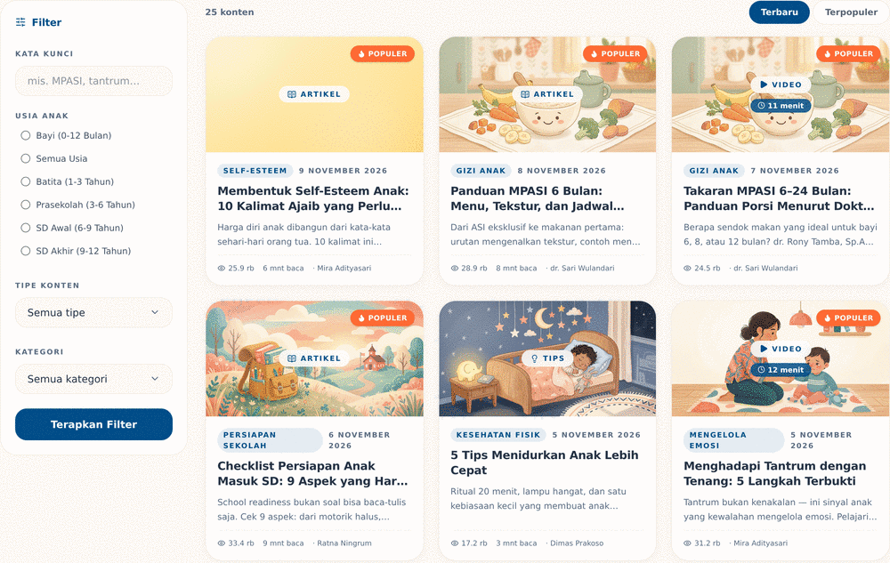
Tiga cara menyaring
Bayi · Batita · Prasekolah · SD Awal · SD Akhir · Semua usia
Gizi, tumbuh kembang, pendidikan, psikologi, tips, digital
Artikel · Video · Infografis · Tips · Aktivitas
Itu pertanyaan pertama setiap orang tua.
Saat ini 25 konten tampil di halaman ini — angka asli dari sistem.
Tur layar · 3 dari 8 · halaman terpenting
Halaman baca — di sinilah produk muncul
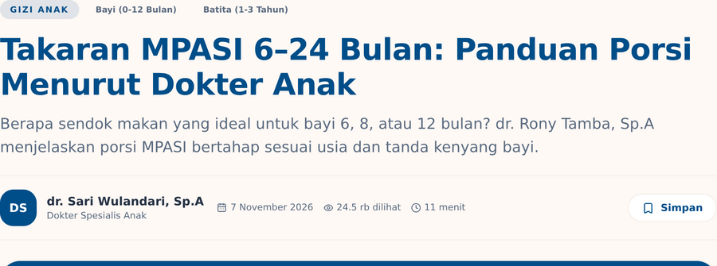
1 Nama penulis + jabatan
“dr. Sari Wulandari, Sp.A — Dokter Spesialis Anak”. Ini yang membangun kepercayaan.
2 Panel rekomendasi
Ada di kolom kanan: maksimal 3 produk, bertanda Sponsored, tanpa harga.
Dulu sempat muncul di tengah artikel, lalu dihapus agar tidak mengganggu membaca.
Tur layar · 4 dari 8
Kalau diperbesar, panel produknya seperti ini
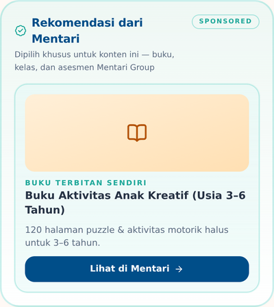
Tampilan asli — diambil dari halaman artikel
Judulnya menyebut nama perusahaan. “Rekomendasi dari Mentari” — bukan “artikel lain” atau “sponsor”.
Ada label “Sponsored”. Artinya jelas: ini bagian komersial, bukan editorial.
Ada penjelasan singkat. “Dipilih khusus untuk konten ini — buku, kelas, dan asesmen Mentari Group”.
Tidak ada harga. Keputusan sadar: harga membuat orang berhenti membaca. Harga baru muncul di halaman detail produk.
Satu tombol keluar. “Lihat di Mentari” membuka situs produk di tab baru. Klik ini yang tercatat di laporan.
Tur layar · 5 dari 8
Learning Path — belajar berurutan, bukan mengembara
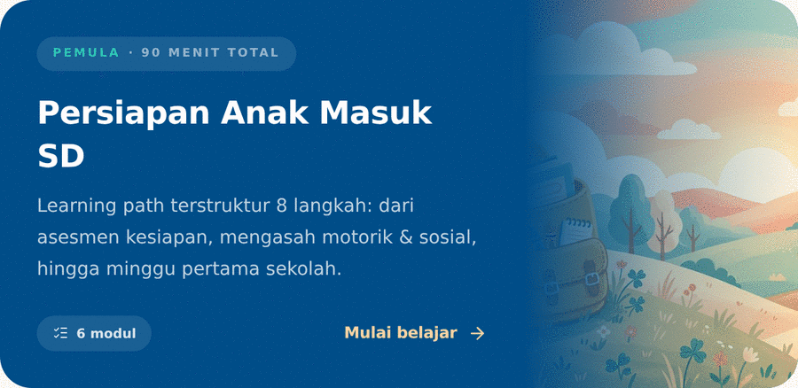
Kartu jalur “Persiapan Anak Masuk SD” — 6 modul, 90 menit total.
Masalah yang dipecahkan
25 artikel terpisah melelahkan. Orang tua tidak tahu harus baca yang mana dulu, dan kapan selesai.
Solusinya
Konten dikemas jadi jalur berurutan dengan estimasi waktu, jumlah modul, dan penanda tingkat kesulitan (Pemula).
Progres jalur tersimpan di perangkat pengguna, belum di akun. Ganti HP = mulai dari nol.
Tur layar · 6 dari 8
Profil saya — tempat data anak dan pencapaian
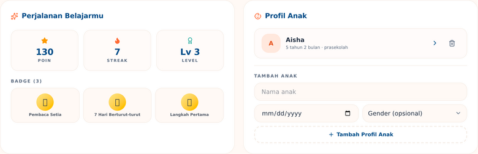
Akun contoh “Ibu Ratna” dari data demo — angka asli dari sistem.
Isi halaman ini
- Poin, streak, level — penanda kebiasaan, bukan nilai akademis
- Badge — lencana yang didapat dari aktivitas tertentu
- Profil anak — nama & usia, dasar untuk menyesuaikan rekomendasi
Supaya orang balik lagi. Simpelnya: pengingat kebiasaan, bukan penilaian.
Tur layar · 7 dari 8
Perkembangan — checklist “anak saya normal?”
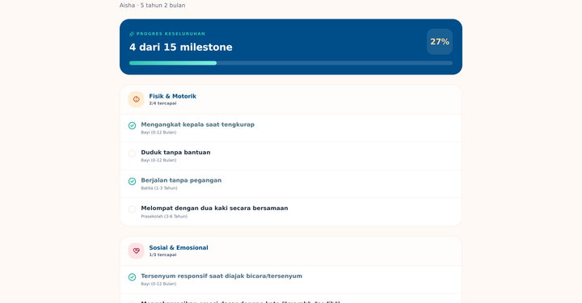
Cara kerjanya, 4 langkah
Kenapa fitur ini disukai orang tua
Orang tua sering tidak yakin apakah perkembangan anaknya “wajar”. Checklist ini memberi titik acuan, bukan vonis.
Fungsinya mengingatkan kapan harus ke dokter. Kalau ada yang bertanya, sebut ini dulu.
Totalnya ada 23 milestone untuk rentang usia 0–12 tahun.
Tur layar · 8 dari 8
Komunitas — tempat orang tua saling menjawab
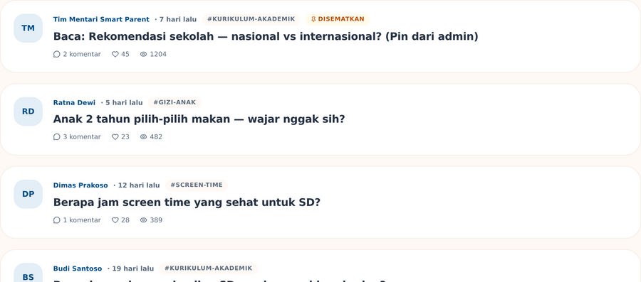
Tiga lapis pengamanan
- Filter kata kasar (Indonesia & Inggris)
- Diskusi bisa dikunci oleh moderator
- Moderasi manual: sematkan, kunci, hapus
Forum membuat orang datang berkali-kali tanpa perlu konten baru. Konten butuh biaya produksi; percakapan tumbuh sendiri.
Saat ini ada 5 diskusi dari data demo — dari 1 diskusi yang disematkan sampai obrolan gizi anak.
Bagian bisnis
Katalog produk — dan kenapa ini bukan toko
| Bisa | Belum / tidak dirancang |
|---|---|
| Lihat katalog | Keranjang belanja |
| Lihat detail produk | Pembayaran |
| Klik keluar ke situs Mentari | Cek ongkir |
| Lacak klik per artikel | Riwayat pesanan |
Jawab: belum, dan memang belum dirancang untuk itu. Situs ini mengantar orang, bukan menjual langsung.
Tujuh jenis produk
Buku Kurikulum Nasional
Buku Kurikulum Internasional
Buku Dongeng & Cerita
Digital Learning
Buku Terbitan Sendiri
English Assessment
Teacher Academy
Harga Rp68.000 – Rp750.000, hanya tampil di halaman detail produk.
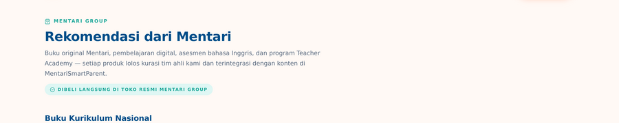
Peran katalog dalam alur
Katalog adalah tujuan akhir dari perjalanan orang tua — tetapi bukan tempat mereka membayar. Tugasnya: memindahkan minat yang sudah terbangun ke toko resmi Mentari.
Yang dicatat
Setiap klik “Lihat di Mentari” → 1 baris data
Hal yang sering disalahpahami
Mayoritas pengguna membukanya di HP — bukan laptop
Dan kebanyakan tidak pernah melihat beranda. Mereka datang dari Google atau link WhatsApp, langsung ke satu artikel.
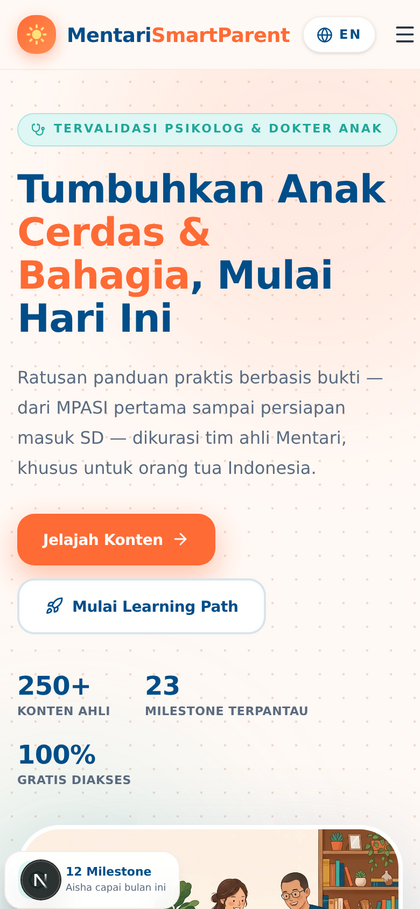
Tampilan asli di layar HP
Tiga pintu masuk — bukan satu
Google — paling umum. Mendarat langsung di artikel. Beranda tidak pernah dilihat.
Media sosial — link dibagikan di grup WhatsApp atau Instagram. Sering di HP dengan koneksi pas-pasan.
Beranda — hanya untuk yang sudah kenal. Fungsinya “etalase”, bukan pintu utama.
“Bayangkan majalah parenting. Orang bisa menemukan satu halamannya lewat Google tanpa pernah melihat sampulnya. Tugas kami: setiap halaman tetap masuk akal sendirian.”
Inventaris
Isinya apa saja — daftar lengkap
Semua bagian yang ada di dalam aplikasi, dikelompokkan jadi lima area.
1 · Konten
Jelajah konten
filter usia, tema, bentuk
Halaman baca
artikel / video + rekomendasi
Pencarian
judul, isi, nama penulis
2 · Belajar
Learning Path
jalur berurutan
Perkembangan
checklist milestone
Profil saya
anak, poin, badge, simpanan
3 · Komunitas
Forum diskusi
daftar topik
Detail diskusi
komentar & balasan
Moderasi
sematkan, kunci, hapus
4 · Produk
Katalog
7 jenis produk
Detail produk
deskripsi + harga
Tombol keluar
ke situs Mentari
5 · Area internal (harus login)
/admin — panel kerja tim: Ringkasan · Konten · Produk · Learning Path · Komunitas · Pengguna. Hanya untuk ADMIN & EDITOR.
+ Halaman pendukung
Tentang kami · Pusat bantuan (FAQ) · Kebijakan privasi · Syarat & ketentuan · Masuk · Daftar · Lupa password.
25 konten saat ini
13 artikel · 7 video · 1 infografis · 2 tips · 2 aktivitas
29 kategori
7 tema besar, masing-masing punya sub-kategori
6 kelompok usia
Dari bayi 0–12 bulan sampai SD akhir 9–12 tahun
Hak akses
Siapa boleh masuk ke mana
Semua orang melihat situs yang sama. Yang berbeda adalah apa yang bisa mereka lakukan setelah login.
Pengunjung
tanpa akun
Baca semua konten, lihat katalog, baca komunitas, buka halaman legal.
Ini mayoritas pengguna
Orang tua
akun gratis
Semua di atas, plus: profil anak, milestone, simpan bacaan, poin & badge, tulis di komunitas.
Target utama kita
Editor
tim internal
Kelola konten, produk, learning path, moderasi komunitas. Tidak bisa mengubah peran orang lain.
Tab “Pengguna” disembunyikan
Admin
tim internal
Semua akses editor, plus mengatur peran pengguna dan melihat angka performa penuh.
Akses tertinggi
Kalau ada laporan “saya tidak bisa buka halaman X”, pertanyaan pertama bukan “bug-nya di mana” — tapi “akunnya peran apa?”.
Siapa yang biasanya butuh akun apa
Tim konten / editor → EDITOR
Tim marketing & produk → ADMIN (butuh angka)
Moderator komunitas → pakai EDITOR, karena peran MODERATOR belum punya akses panel
Semua orang lain → akun USER biasa, atau tanpa akun
Satu-satunya halaman “teknis”
Kenapa aplikasi punya tiga bagian?
Cukup pakai satu analogi: restoran. Kalau ada yang bertanya, jawab dengan ini.
Tampilan
= ruang makan & menu
Yang dilihat dan diklik orang tua: halaman, tombol, gambar.
Mesin
= dapur
Yang tidak terlihat: aturan siapa boleh apa, cara memilih produk, pencatatan.
Gudang data
= kulkas & gudang bahan
Tempat semua data disimpan permanen: akun, artikel, produk, komentar.
Mengubah tampilan = cepat. Mengubah aturan = sedang. Mengubah jenis data yang disimpan = paling lama.
Supaya mengganti desain tidak merusak data, dan data tidak bisa diakses langsung dari HP pengguna.
Di balik layar
Panel admin — dapur tempat tim bekerja
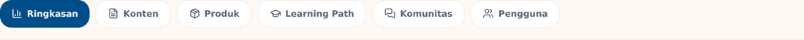
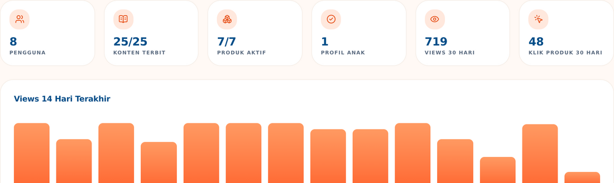
1 Enam angka utama
Pengguna · konten terbit · produk aktif · profil anak · views 30 hari · klik produk 30 hari.
2 Grafik 14 hari
Berapa kali artikel dibuka tiap hari — untuk melihat tren naik/turun.
Halaman ini hanya untuk tim, tidak akan muncul di hasil pencarian.
Di data demo: 8 pengguna, 25 konten terbit, 7 produk aktif, 719 views 30 hari, 48 klik produk.
Panel admin · lanjutan
Enam tab, dan apa yang bisa dilakukan di masing-masing
Ringkasan
Angka performa + grafik + konten terpopuler + produk paling diklik.
Konten
Cari, filter status, buat artikel baru, ubah status Terbit / Draft / Arsip satu klik.
Produk
Tambah/edit produk, tandai unggulan, hapus lunak (masih bisa dipulihkan).
Learning Path
Buat jalur belajar dan susun urutan modul-modulnya.
Komunitas
Sematkan diskusi penting, kunci yang memanas, hapus yang melanggar.
Pengguna admin saja
Lihat daftar akun, ubah peran. Editor tidak melihat tab ini.
Alur kerja harian tim konten
1 · Tulis
Judul, bentuk, isi, tema
2 · Simpan draft
Belum terlihat publik
3 · Terbitkan
Langsung tampil di situs
4 · Pantau
Lihat views di Ringkasan
Form konten masih ringkas. Pengaturan usia sasaran, tag, thumbnail, dan penulis lengkap belum bisa dari panel — masih lewat jalur teknis.
Konten & kepercayaan
Siapa yang menulis, dan kenapa itu penting
Ini pembeda utama dari blog parenting biasa. Kalau ditanya “apa bedanya dengan KlikDokter / Popmama / blog?” — jawabnya ada di halaman ini.
Mira Adityasari, M.Psi.
Psikolog Anak & Keluarga
Tantrum, sibling rivalry, stimulasi dini
dr. Sari Wulandari, Sp.A
Dokter Spesialis Anak
Nutrisi, imunisasi, tumbuh kembang 0–6 th
Dimas Prakoso
Neurosains & Edukasi
Cara anak belajar & mengingat
Ratna Ningrum, S.Pd.
Pendidik Anak Usia Dini
Bermain sambil belajar, kesiapan sekolah
Yang membuat konten ini berbeda
- Nama & jabatan penulis selalu tampil di setiap artikel
- Setiap konten ditinjau sebelum terbit dan diperbarui berkala
- Ada jalur koreksi: pembaca bisa email halo@mentari.id
Semua konten bersifat edukatif. Untuk kondisi medis, orang tua harus tetap konsultasi ke dokter anak. Ini tertulis di Syarat & Ketentuan — dan sebaiknya disebut setiap presentasi.
Nilai bisnis
Kenapa cara ini masuk akal untuk Mentari
Tiga masalah lama dalam menjual produk pendidikan, dan bagaimana situs ini menjawabnya.
MASALAH LAMA
Iklan terasa mengganggu
JAWABANNYA
Beri ilmu dulu, gratis. Produk baru muncul setelah orang tua selesai membaca — saat mereka memang sedang mencari solusi.
MASALAH LAMA
Produk tidak nyambung
JAWABANNYA
Rekomendasi dipilih berdasarkan topik & usia anak yang sedang dibaca. Bukan “produk terlaris untuk semua orang”.
MASALAH LAMA
Tidak tahu siapa targetnya
JAWABANNYA
Situs mencatat topik apa yang dicari dan produk apa yang diklik. Itu bahan untuk keputusan konten & produk berikutnya.
Prinsipnya
Trust first, commerce second.
Konten editorial tidak boleh dibayar oleh produk. Rekomendasi selalu diberi label “Sponsored”. Kalau aturan ini dilanggar, seluruh nilai situs ini hilang.
Data & laporan
Angka apa yang kita punya (dan tidak punya)
Tercatat otomatis
Berapa kali tiap artikel dibuka
per artikel & per hari, jadi bisa dilihat trennya
Produk apa yang diklik, dari artikel mana
termasuk posisi panelnya
Akun, profil anak, simpanan, milestone
untuk melihat seberapa dalam orang memakai
Aktivitas komunitas
jumlah diskusi, komentar, suka
Angka nyata di data demo saat ini
719
Views 30 hari
48
Klik produk
8
Pengguna
Dari akun demo. Angka sebenarnya akan berbeda di server produksi.
Laporan penjualan (karena tidak ada transaksi), data demografi pembaca, dan dashboard “dari kunjungan sampai pembelian”.
Cara membaca angka ini dengan jujur
Views ≠ pembaca unik. Satu orang yang membuka 3 artikel dihitung 3 kali.
Klik ≠ penjualan. Kita tahu orang tertarik, bukan bahwa mereka membeli.
30 hari terakhir. Bukan angka sepanjang masa — selalu sebut rentangnya.
Status hari ini
Apa yang sudah jalan, apa yang belum
Bagian ini melindungi kredibilitas tim. Kalau presentasi menjanjikan yang belum ada, orang akan menemukannya sendiri.
| Baca konten + filter usia/tema | Jalan |
| Pencarian | Jalan |
| Daftar, login, peran pengguna | Jalan |
| Profil anak & checklist milestone | Jalan |
| Simpan bacaan (bookmark) | Jalan |
| Rekomendasi produk 3 tingkat | Jalan |
| Komunitas + moderasi | Jalan |
| Panel admin | Jalan |
| Pencatatan views & klik produk | Jalan |
| Email reset password | Belum |
| Simpan progres learning path di akun | Hanya di HP |
| Poin otomatis dari membaca | Sebagian |
| Naik level otomatis | Belum |
| Buletin email mingguan | Tampilan saja |
| Unggah gambar dari panel admin | Belum |
| Keranjang & pembayaran | Tidak dirancang |
| Tombol “laporkan” di komunitas | Belum |
| Notifikasi / email otomatis | Belum |
Satu hal yang wajib diketahui
Soal angka “250+ konten” di beranda
Yang tertulis di beranda
“250+ Konten Ahli”
Yang benar-benar ada di database
25 konten (13 artikel, 7 video, 1 infografis, 2 tips, 2 aktivitas)
Anggap 250 itu target, bukan kondisi sekarang. Kalau ada yang bertanya, jawab: “Isi kontennya sedang dibangun menuju 250. Yang sudah jadi fondasinya.”
23 milestone · 10 badge · 2 learning path · 7 produk · 29 kategori · 5 diskusi komunitas.
Kalau angka di beranda ingin dibuat akurat sekarang, itu perubahan kecil di satu file teks — bukan pekerjaan besar. Tinggal putuskan mau jujur dengan 25, atau percepat produksi kontennya.
Praktik · 5 menit
Coba sendiri — panduan untuk tim
Cara tercepat memahami produk ini: pakai sendiri. Urutannya sengaja mengikuti perjalanan orang tua.
Akun demo
| Orang tua | demo@mentari.id |
| Admin | admin@mentari.id |
| Editor | mentari@mentari.id |
| Password | mentari123 |
Akun contoh untuk lingkungan pengembangan. Jangan dipakai di server publik.
Catat: halaman apa, akun mana, dan apa yang diharapkan. Tiga informasi itu cukup untuk tim produk menyelidiki.
Siap ditanya
Delapan pertanyaan yang paling sering muncul
TIni aplikasi atau website?
Website. Dibuka lewat browser dan dioptimalkan untuk HP — tidak perlu unduh dari Play Store.
TSemua kontennya gratis?
Ya. Konten, learning path, milestone, dan komunitas gratis. Hanya produk yang direkomendasikan yang berbayar.
TIni “jualan” produk Mentari?
Ada unsur komersialnya, tapi terbuka: panelnya berlabel “Rekomendasi dari Mentari” + “Sponsored”.
TData anak aman?
Hanya terlihat pemilik akun, tidak dijual, tidak untuk iklan bertarget, bisa dihapus sendiri kapan saja.
TBagaimana produk dipilih?
Tiga tingkat: kurasi tim editorial, lalu kecocokan usia, lalu produk unggulan sebagai cadangan.
TBisa checkout di sini?
Belum. Situs ini mengantar orang ke situs Mentari, bukan menjual langsung.
TKok belum ada aplikasinya?
Mayoritas orang tua datang dari link WhatsApp dan Google. Situs yang ramah HP sudah melayani mereka tanpa unduh apa pun.
★Kalau tidak tahu jawabannya?
Katakan: “Saya cek dulu ke tim produk.” Lebih baik daripada menebak.
Sebelum presentasi
Empat langkah persiapan
Tiga hal yang jangan diucapkan
- ✕“Semua badge otomatis” — sebagian masih dari data contoh.
- ✕“Bisa checkout di sini” — tidak ada transaksi.
- ✕“Sudah 250 konten” — itu target, data saat ini 25.
Kalimat penutup
“Kami membantu orang tua dulu — dan itu yang membuat produk Mentari terasa relevan, bukan dipaksakan.”
Disusun dari kode dan data di repositori mentari-smart-parenting. Semua tangkapan layar adalah tampilan asli aplikasi, bukan mockup. Angka berasal dari data demo (seed) dan akan berbeda di lingkungan produksi.
26